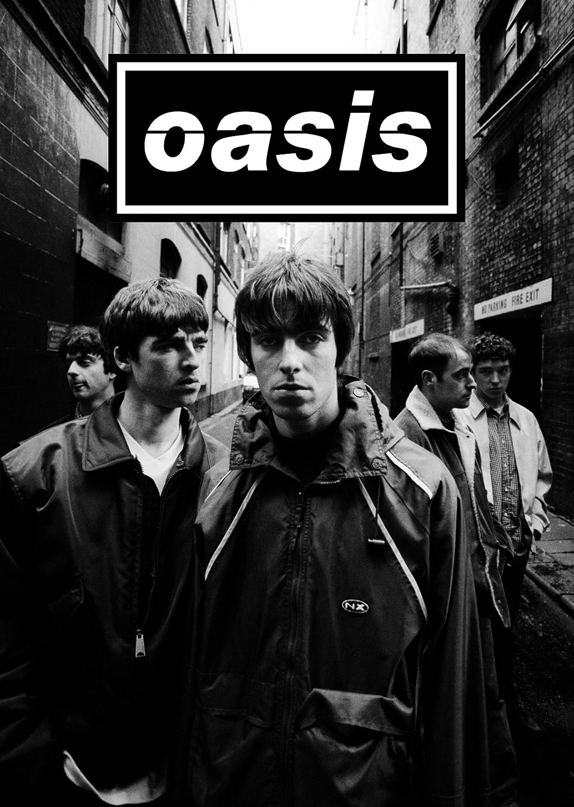
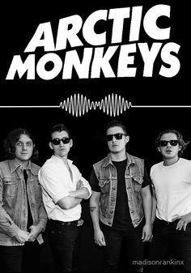

¡Gusto musical!
En este apartado se encontrara los gustos musicales que comparto yo, pues me encanta escuchar musica y seria un honor compartirlo en este apartado.
1.- Oasis.
Una banda nacida en Inglaterra, popularizado por el movimiento Britpop de aquella epoca, es una de las bandas más importantes de los 90s, marcando por su sonido unico y la simplicidad de sus canciones que hacian que cada persona pueda sentirse representado en aquellas bellas baladas. Esta banda fue formada en 1991 bajo el nombre de "The Rain". Pronto, despues de que ingresara Noel Gallagher (Hermano del vocalista Liam Gallagher) el nombre de la banda fue cambiada a "Oasis".
Esta banda es de mis favoritas, por su gran sonido, lo honestas que son sus letras, y la energia que da la voz de Liam Gallagher.

2.- Abandoned Pools.
Este fue un proyecto musical formado por Tommy Walter en 1997, donde exploraba multiples sonidos y melodias unicas que permitian expresar cada momento y sentimiento de su vida. Aunque no exploto de popularidad, su musica destaca por lo hermosas que estan y su gran habilidad de Tommy Walter para ajustar sonidos y ambientar su musica de forma retrospectiva.
Esta "banda" brilla por su sonido melancolico y el uso de melodias suaves pero a su vez potentes que dan esa motivación a nuestros dias.
3.- Arctic Monkeys.
Esta banda nacida en Inglaterra, fue formada bajo el nombre de Arctic Monkeys en los 2000s. Reconocida por ser de las primeras bandas exitosas por ayuda del internet, se acompaña de varios albums caracterizados por tener diferentes sonidos, representando las multiples facetas de el sonido, estilo y pensamiento de la banda.
Como la anterior banda "Oasis", esta banda me gusta por lo representativos que pueden ser en cada album. Aunque me guste más las canciones con guitarras distorcionadas, gran parte de su repertorio musical es muy bueno por lo tranquilas y experimentales que tienden a ser.
